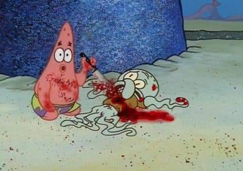

Bio
Plastic Heart Surgery (Plastic S.), is a Toronto-based multi-disciplinary artist, curator, and performer. She works on large scale canvas incorporating mixed-media. She is also a music producer and sound designer; being a producer, mixing engineer and collaborator for multiple recording-artists alongside her solo visual work. Plastic has shown paintings across Canada–self-curating and developing multiple exhibitions. She is in her final year of studies at Ontario College of Art and Design. She focuses on complicated subject matters such as sex, sexuality, biology, abstraction, neo-cubism and material. Her work encompasses multi-media art practices–focusing on abstraction, found media, collage, natural-materials such as foliage, earth and other constructive materials such as wood-pallets. She works on sculptural wood-pieces and is known for using oil-based resins. She is also known within the music scene for her music under the moniker Plastic Heart Surgery–having released multiple albums, playing shows across Canada along with sound designing video games.
blah blah blah
